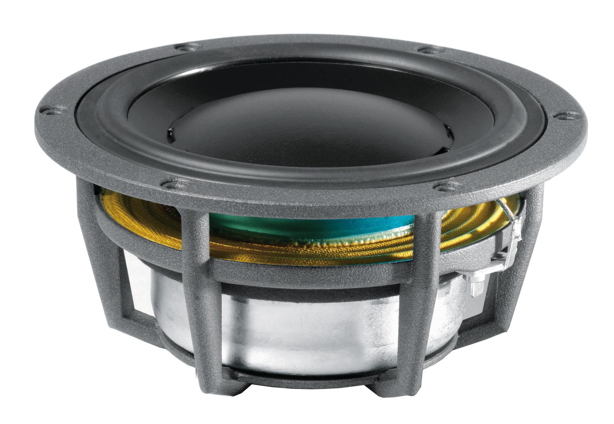

Loudspeakers

Loudspeaker Systems Explained
Basics About LoudspeakersThere are many different kinds of drivers but they all do basically the same thing: create sound waves. By far the most common type of driver is the moving coil electrodynamic piston driver. It has a moving part called a diaphragm that acts like a piston to pump air and thereby create sound waves. A common diaphragm for a woofer is a paper cone. A common diaphragm for a tweeter is a fabric dome. Drivers come in different sizes because it is nearly impossible to make one piston driver that can reproduce sound waves over the entire 20 Hz to 20 kHz frequency range of human hearing. To produce low frequencies a driver needs to have a large diaphragm and enough mass to resonate at a low frequency. To produce high frequencies a driver needs to have a small diaphragm with a low mass. Obviously, these requirements are in opposition so drivers are usually designed to produce only a portion of the sound. Tweeters are the smaller drivers since they produce the highest frequencies with the shortest wavelengths. Woofers are the largest drivers since they produce the lowest frequencies with the longest wavelengths. There are also midrange drivers of various sizes that reproduce middle frequencies between the tweeter and woofer. Midrange drivers are used in multi-way speakers with three or more driver sizes. Some have open backs and some have sealed backs. Besides their different size, there is another very significant difference between a tweeter and a woofer. The tweeter usually has a sealed back while the woofer usually has an open back. With a sealed back, the tweeter emits sound waves from the front side only. A woofer emits sound waves from both its front and back side. To understand how speakers work, you first need to understand how sound works. Inside your ear is a very thin piece of skin called the eardrum. When your eardrum vibrates, your brain interprets the vibrations as sound - that's how you hear. Rapid changes in air pressure are the most common thing to vibrate your eardrum. An object produces sound when it vibrates in air (sound can also travel through liquids and solids, but air is the transmission medium when we listen to speakers). When something vibrates, it moves the air particles around it. Those air particles in turn move the air particles around them, carrying the pulse of the vibration through the air as a traveling disturbance. To see how this works, let's look at a simple vibrating object -- a bell. When you ring a bell, the metal vibrates -- flexes in and out -- rapidly. When it flexes out on one side, it pushes out on the surrounding air particles on that side. These air particles then collide with the particles in front of them, which collide with the particles in front of them and so on. When the bell flexes away, it pulls in on these surrounding air particles, creating a drop in pressure that pulls in on more surrounding air particles, which creates another drop in pressure that pulls in particles that are even farther out and so on. This decreasing of pressure is called rarefaction. In this way, a vibrating object sends a wave of pressure fluctuation through the atmosphere. When the fluctuation wave reaches your ear, it vibrates the eardrum back and forth. Our brain interprets this motion as sound. Differentiating Sound:
Diaphragm:A driver produces sound waves by rapidly vibrating a flexible cone, or diaphragm.
Voice Coil: Running electrical current through the wire creates a magnetic field around the coil, magnetizing the metal it is wrapped around. The field acts just like the magnetic field around a permanent magnet: It has a polar orientation -- a "north" end and and a "south" end -- and it is attracted to iron objects. But unlike a permanent magnet, in an electromagnet you can alter the orientation of the poles. If you reverse the flow of the current, the north and south ends of the electromagnet switch. This is exactly what a signal does -- it constantly reverses the flow of
electricity.
If you've ever hooked up a stereo system, then you know that there are two output wires for
each speaker -- typically a black one and a red one. Magnets:When the electrical current flowing through the voice coil changes direction, the coil's polar orientation reverses. This changes the magnetic forces between the voice coil and the permanent magnet, moving the coil and attached diaphragm back and forth. When the coil moves, it pushes and pulls on the speaker cone. This vibrates the air in front of the speaker, creating sound waves. The electrical audio signal can also be interpreted as a wave. The frequency and amplitude of this wave, which represents the original sound wave, dictates the rate and distance that the voice coil moves. This, in turn, determines the frequency and amplitude of the sound waves produced by the diaphragm. Different driver sizes are better suited for certain frequency ranges. For this reason,
loudspeaker units typically divide a wide frequency range among multiple
drivers. In
the next section, we'll find out how speakers divide up the frequency range, and we'll look
at the main driver types used in loudspeakers. Moving-Coil Loudspeakers Fig. 1.0 The behavior of a driver is governed by basic principles of physics. An alternating current is supplied to the leads of the driver. These leads are connected to a wire that wraps around a coil former, creating what is known as the voice coil. The coil has an electrical resistance and inductance associated with it. It is positioned within the gap created between a hollow cylindrical magnet (e.g., north pole) and a solid cylindrical pole piece (e.g., south pole). The latter is located within the hollow coil former. Current applied to the voice coil flows in a circular direction around the windings. The magnet structure provides magnetic flux through the coil with field lines running perpendicular to the direction of current flow. As is well known in the study of electromagnetism, if a current flows in the presence of a magnetic field, a Lorentz force is created. When applied to the geometry of a moving-coil loudspeaker driver, the orthogonally oriented Lorentz Force simplifies to the product of the effective magnetic flux density, the effective length of the coil in the field, and the current flowing in the coil. Since the applied current alternates, the Lorentz force likewise alternates, causing the voice coil (and anything attached to it) to oscillate in an analogous manner. The voice coil is attached to the former, which is attached to a cone or diaphragm. This diaphragm assembly is held in place by a suspension system that centers the voice coil in the magnet gap. Suspension systems typically consist of two separate flexible components: the surround and the spider. These spaced components serve to constrain the cone vibrations to motion along a single axis and supply a restoring force to return the cone to its rest position. The suspension system has a compliance and resistance associated with it. The cone, coil former, voice coil, parts of the suspension system, and lead wires ideally move in phase as lumped elements with a certain effective mass. Oscillations of the cone produce fluctuations in air pressure that radiate away from the driver as sound waves. Brief History of Moving-Coil Loudspeaker Modeling DevelopmentMoving-coil loudspeaker drivers have been studied for years. McLachan first developed equations governing moving-coil loudspeakers in the 1930s.In the 1940s, Olson presented analogous circuits that represent the multiple domains of the movingcoil driver. Later, in 1954, Beranek furthered the developments of Olson in his development of a partial solution to the response of a bass-reflex loudspeaker system. In 1958, Novak presented a generalized theory on the design and performance of vented and closed-box loudspeaker enclosures. However, Thiele is generally thought of as the first to develop a complete synthesis procedure for direct radiator loudspeakers. Thiele's work was initially published in the 1961 Proceedings of the Institution of Radio Engineers. It was then reprinted in the 1971 Journal of the Audio Engineering Society (JAES). Between 1968 and 1972, Benson published a series of papers building on previous work. Work done by Benson was not well known until Small referenced his work. Small published papers in the internationally published JAES, which brought recognition to both Benson's and Small's efforts. A fundamental set of parameters that describe the lumped element model of a moving-coil loudspeaker have been given the name Thiele/Small Parameters in recognition of their work. Knowledge of these parameters is essential in the design of complete loudspeaker systems. Loudspeaker DriverElectrical energy passed from an amplifier is converted into kinetic energy as the loudspeaker cone moves in and out via electro-mechano-transduction.

The voice coil is attached to the cone, which is in turn held in a steel basket and fixed to a surround. Flux is generated by a magnet and guided by steel plates and a pole piece effectively forming a magnetic circuit. As a time varying current is passed through the coil the interaction with the flux generated by the magnetic causes a force. Generally a spider is needed to centre the voice coil in the gap, these are generally made of steam pressed cotton. The coil and magnet are also kept clean by a protective dust cap. The cone is generally moulded from steam pressed paper though polypropylene, kevlar and even carbon fibre cones can be used. The resulting piston-like action of the cone causes changes in the air pressure in front of it, producing sound energy. A well-designed speaker may only be around 5% efficient, in other words, 20 watts of electrical power from an amplifier may only result in 1 watt of sound power. Loudspeaker SensitivityWe specify sensitivity of a loudspeaker in terms of dB SPL for 2.83 V input.The sound pressure level is measured on-axis in anechoic conditions at a distance of 1 metre from the loudspeaker. 2.83Volts corresponds to the voltage across a standard 8 ohms speaker driven at 1Watt. So if we measure 0.2 Pa at one volt what is the Loudspeakers Sensitivity?
Change in SPL if 2.83volts applied is
i.e. 89.04 dB @ 1 meter with 2.83V input The graph below shows typical sensitivities of a wide range of modern speakers

Typically 88dB/2.83V@1m 80dB/2.83V@1m flat panel speakers 95dB/2.83V@1m professional monitors Using peak response or measuring with wide band noise can give misleadingly high
sensitivities. Note sensitivity is not necessarily a guide to how good a speaker is. For instance a PA speaker will have a sensitivity of around 115dB so sacrificing sound quality for high output. Conversely a good monitor may be designed to ensure a flat frequency response with components that also reduce sensitivity. Older SystemOlder system specified efficiency in the rather unusual units of dB SPL/W/m where the power is the electrical input power. The older system is still quite popular so it’s worth knowing about. A change in input POWER of Pratio would cause an increase in radiated sound pressure level of 10 log(Pratio) because velocity and sound pressure are proportional to Voltage, whereas power is proportional to voltage squared). This means for instance if a speaker with a sensitivity of 100 dB/W/m is powered by 50W, the resulting SPL is 100+10*LOG(50/1) = 100 + 17 = 117dB/W/m Although still commonly used efficiency is not as useful as voltage sensitivity since input power is difficult to measure given input impedance is frequency dependant, so for instance a lower frequency will have lower impedance and suck more power, hence be less efficient. Also modern solid state amps are voltage sources supplying current on demand so power is less important than dB for volts. Frequency ResponseThe resulting SPL for a speaker powered across a range (sweep) of narrow band frequencies is the frequency response. Frequency response is often quoted as the maximum deviation in SPL within a specified range. For example… Frequency response from 20Hz - 20kHz Often manufactures will also provide a plot of frequency response…
dB against frequency. Ideally a speaker will have a flat response across a wide range. Usually the more ragged the response to poorer the speaker. Clearly different types of speaker will have different responses to suit their application for example
Improving Bass ResponseThe bass response of a loudspeaker can be improved by using back radiation. Unfortunately, the front and back radiation is in anti-phase - we need a "phase inverter" before it is possible to add the front and back radiation constructively. Such a strategy is achieved by the "phase inverter" family of loudspeaker enclosures, which couple front and back radiation from the low frequency unit(s) through an acoustic phase inverting network. The phase inverter family includes
The most important member of the phase inverter family is the: Bass Reflex Enclosure In a bass reflex enclosure, the loudspeaker internally excites a Helmholtz resonator. This is an acoustic network which has the amplitude and phase response of a second order resonant system (which gives a phase inversion above resonance). 
The bass reflex enclosure is a closed box enclosure with a "port" in one of the enclosure walls. The port is a tube, open at one end to the inside volume of the enclosure and open at the other end to the listening space. Air in the port moves as a single "lumped mass" which bounces up and down on the spring formed by the volume of air trapped in the enclosure, giving the system a second order resonant behaviour. From resonant frequency upwards, the port radiation and the speaker radiation are in phase (so they add constructively giving more bass). Below resonance, the port and speaker radiation are out of phase (so they add destructively giving less bass than a closed box) At the resonant frequency the port response much greater than the 'speaker response (because the back load presented to the loudspeaker is maximum at the resonance of the port. The frequency responses of the speaker and port in a bass reflex enclosure are shown individually in the figure below....

DirectivityAt low frequencies sound propagation is omni directional (spreads out in all directions) for high frequencies sound propagation becomes much more directional. This holds true for speakers where the placement of sub woofers is less important than higher frequency monitors. This can be shown for a loudspeaker by plotting a curve of equal SPL hence representing the propagating wave front. Low Frequency
High Frequency
As the frequency increases the propagating wave front splits into lobes. The forward lobe carries most of the sound energy. This has an important bearing on stereo sound systems and mixing as the listener is less likely to care where low frequency sounds come relative to high frequency sounds. On the Calculator page you wil find 32 Calculator-Modules... |